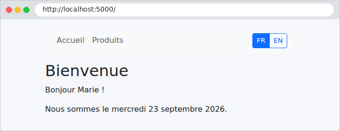
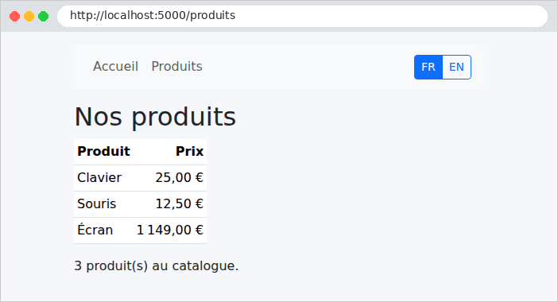
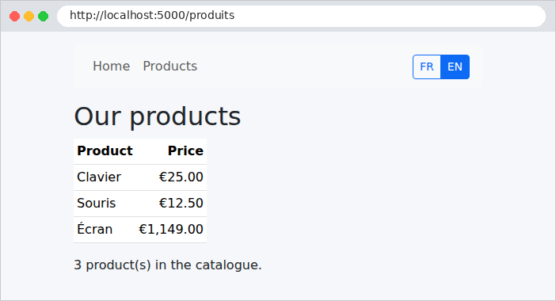
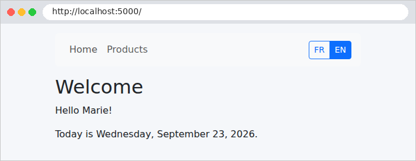

5. Internationalisation
Une application internationalisée affiche ses textes dans la langue de l'utilisateur. L'étude de cas est en français et en anglais. Le principe est simple : les vues ne contiennent plus de textes, mais des clés ([MENU.ACCUEIL]), et un dictionnaire par langue associe à chaque clé son texte. La langue choisie est mémorisée dans un cookie.
[ASP.NET Core] a son propre système de traduction (l'interface [IStringLocalizer] et des fichiers de ressources [.resx]). Nous utiliserons plutôt des dictionnaires JSON, lus par une petite classe écrite pour l'occasion : ce sont les mêmes fichiers que ceux de la version [NestJS] de l'étude de cas, et leur format se lit et s'écrit sans outil particulier. En revanche, nous confierons à [ASP.NET Core] le choix de la langue de chaque requête : c'est le rôle de son middleware de localisation.
5.1. Exemple 22 : une application en deux langues
| 22-i18n/
├── Controllers/
│ ├── LangueController.cs
│ └── PagesController.cs
├── i18n/
│ ├── en.json
│ └── fr.json
├── Traduction/
│ ├── PageVue.cs
│ └── Traducteur.cs
├── Views/
│ ├── Pages/
│ │ ├── Accueil.cshtml
│ │ └── Produits.cshtml
│ ├── Shared/
│ │ ├── _Layout.cshtml
│ │ └── _Navbar.cshtml
│ ├── _ViewImports.cshtml
│ └── _ViewStart.cshtml
├── wwwroot/
│ └── css/
│ └── styles.css
├── appsettings.json
├── Exemple22.csproj
└── Program.cs
|
5.1.1. Les dictionnaires
Le fichier [i18n/fr.json] :
| {
"MENU": {
"ACCUEIL": "Accueil",
"PRODUITS": "Produits"
},
"ACCUEIL": {
"TITRE": "Bienvenue",
"BONJOUR": "Bonjour {nom} !",
"DATE": "Nous sommes le {date}."
},
"PRODUITS": {
"TITRE": "Nos produits",
"NOM": "Produit",
"PRIX": "Prix",
"NOMBRE": "{n} produit(s) au catalogue."
}
}
|
Le fichier [i18n/en.json] :
| {
"MENU": {
"ACCUEIL": "Home",
"PRODUITS": "Products"
},
"ACCUEIL": {
"TITRE": "Welcome",
"BONJOUR": "Hello {nom}!",
"DATE": "Today is {date}."
},
"PRODUITS": {
"TITRE": "Our products",
"NOM": "Product",
"PRIX": "Price",
"NOMBRE": "{n} product(s) in the catalogue."
}
}
|
- un dictionnaire est un fichier JSON, organisé par page ou par thème : la clé [ACCUEIL.BONJOUR] désigne le texte [BONJOUR] de la section [ACCUEIL] ;
- ligne 8 : un texte peut contenir des paramètres, entre accolades, remplacés au moment de la traduction. L'ordre des mots change d'une langue à l'autre : c'est pourquoi on ne fabrique pas un texte en concaténant des morceaux traduits.
5.1.2. Le service de traduction
Le fichier [Traduction/Traducteur.cs] :
| using System.Globalization;
using System.Text.Json;
using System.Text.RegularExpressions;
namespace Exemple22.Traduction;
// les dictionnaires, lus UNE fois au démarrage : le service est un singleton
public partial class Traducteur
{
public static readonly string[] Langues = ["fr", "en"];
public const string LangueParDefaut = "fr";
// langue -> (clé complète "ACCUEIL.BONJOUR" -> texte)
private readonly Dictionary<string, Dictionary<string, string>> dictionnaires = [];
public Traducteur(IWebHostEnvironment environnement)
{
foreach (var langue in Langues)
{
var chemin = Path.Combine(environnement.ContentRootPath, "i18n", $"{langue}.json");
using var document = JsonDocument.Parse(File.ReadAllText(chemin));
var dictionnaire = new Dictionary<string, string>();
Aplatir(document.RootElement, "", dictionnaire);
dictionnaires[langue] = dictionnaire;
}
}
// la langue de la requête en cours, fixée par le middleware de localisation
public static string LangueCourante()
{
var langue = CultureInfo.CurrentUICulture.TwoLetterISOLanguageName;
return Langues.Contains(langue) ? langue : LangueParDefaut;
}
// Traduire("ACCUEIL.BONJOUR", { ["nom"] = "Marie" }) -> "Bonjour Marie !"
public string Traduire(string? cle, IReadOnlyDictionary<string, string>? parametres = null)
{
if (string.IsNullOrEmpty(cle)) return "";
// une clé absente affiche la clé elle-même : un oubli se voit à l'écran
var texte = dictionnaires[LangueCourante()].GetValueOrDefault(cle) ?? cle;
if (parametres is null) return texte;
// chaque {nom} est remplacé par la valeur du paramètre de même nom
return Parametre().Replace(texte, m => parametres.TryGetValue(m.Groups[1].Value, out var valeur) ? valeur : m.Value);
}
// { "MENU": { "ACCUEIL": "Accueil" } } -> { "MENU.ACCUEIL": "Accueil" }
private static void Aplatir(JsonElement noeud, string prefixe, Dictionary<string, string> resultat)
{
foreach (var propriete in noeud.EnumerateObject())
{
var cle = prefixe == "" ? propriete.Name : $"{prefixe}.{propriete.Name}";
if (propriete.Value.ValueKind == JsonValueKind.Object)
{
Aplatir(propriete.Value, cle, resultat);
}
else
{
resultat[cle] = propriete.Value.GetString() ?? "";
}
}
}
// l'expression régulière {nom}, compilée par le compilateur C#
[GeneratedRegex(@"\{(\w+)\}")]
private static partial Regex Parametre();
}
|
Commentons ce code :
- ligne 8 : le mot-clé [partial] est exigé par l'expression régulière de la fin du fichier (cf. plus loin) ;
- lignes 10-11 : les langues gérées, et la langue par défaut ;
- ligne 14 : pour chaque langue, un dictionnaire [C#] qui associe à chaque clé complète ([ACCUEIL.BONJOUR]) son texte ;
- lignes 16-24 : le constructeur lit les fichiers JSON. Le service [IWebHostEnvironment], fourni par [ASP.NET Core], donne le dossier du projet ([ContentRootPath]). [JsonDocument.Parse] analyse le texte JSON ; [using var] libère l'objet à la fin du bloc. Le service sera un singleton (cf. [Program.cs]) : les fichiers sont lus une seule fois ;
- lignes 29-32 : la langue de la requête en cours. Nous verrons que le middleware de localisation la range dans [CultureInfo.CurrentUICulture]. [TwoLetterISOLanguageName] en donne le code sur deux lettres ([fr], [en]) ;
- lignes 36-43 : la traduction. La clé est cherchée dans le dictionnaire de la langue courante ; absente, c'est la clé elle-même qui est affichée : un oubli se repère immédiatement à l'écran. L'expression régulière trouve chaque paramètre [{nom}] du texte et le remplace par sa valeur ; un paramètre sans valeur est laissé tel quel ;
- lignes 47-58 : la fonction « aplatit » le JSON : l'objet ["ACCUEIL": { "BONJOUR": "..." }] donne la clé [ACCUEIL.BONJOUR]. Elle s'appelle elle-même (fonction récursive) pour descendre dans les objets imbriqués ;
- lignes 64-65 : l'expression régulière [\{(\w+)\}] (une accolade, un ou plusieurs caractères de mot, capturés, une accolade). L'attribut [[GeneratedRegex]] demande au compilateur de produire son code d'analyse une fois pour toutes, à la compilation. La méthode est déclarée [partial] : son corps est écrit par le compilateur.
5.1.3. Traduire dans les vues
Une vue pourrait obtenir le service par la directive [@inject Traducteur Traducteur], puis écrire [@Traducteur.Traduire("MENU.ACCUEIL")]. C'est long, et il faudrait le répéter dans chaque vue. On procède autrement : chaque vue [Razor] est compilée en une classe [C#], qui dérive par défaut de la classe [RazorPage<TModel>] du framework. On peut intercaler une classe à nous, qui donne à toutes les vues les méthodes dont elles ont besoin. Le fichier [Traduction/PageVue.cs] :
| using System.Globalization;
using Microsoft.AspNetCore.Mvc.Razor;
using Microsoft.AspNetCore.Mvc.Razor.Internal;
namespace Exemple22.Traduction;
// la classe mère de toutes les vues (cf. Views/_ViewImports.cshtml : @inherits)
public abstract class PageVue<TModel> : RazorPage<TModel>
{
// rempli par l'injection de dépendances, comme le ferait @inject dans une vue
[RazorInject]
public Traducteur Traducteur { get; set; } = null!;
// @T("ACCUEIL.BONJOUR", ("nom", "Marie")) : les paramètres sont des couples (nom, valeur)
public string T(string? cle, params (string Nom, object? Valeur)[] parametres) =>
Traducteur.Traduire(cle, parametres.ToDictionary(p => p.Nom, p => p.Valeur?.ToString() ?? ""));
// "fr" ou "en"
public string Langue => Traducteur.LangueCourante();
// une date en toutes lettres, dans la langue courante
public string DateLongue(DateOnly date) => date.ToString("D", CultureInfo.CurrentCulture);
// un montant en euros, au format de la langue courante
public string Monnaie(decimal montant)
{
var format = (NumberFormatInfo)CultureInfo.CurrentCulture.NumberFormat.Clone();
format.CurrencySymbol = "€";
return montant.ToString("C", format);
}
}
|
Commentons ce code :
- ligne 8 : une classe générique : [TModel] est le type du modèle de la vue, différent pour chaque vue. La classe est abstraite : seules les vues en dérivent ;
- lignes 11-12 : l'attribut [[RazorInject]] demande à [Razor] de remplir la propriété par l'injection de dépendances : c'est l'équivalent de [@inject] pour une classe ;
- lignes 15-16 : la méthode [T] traduit une clé. Ses paramètres sont des tuples [(nom, valeur)] : une syntaxe compacte pour écrire des couples de valeurs, [("nom", "Marie")]. Le mot-clé [params] permet d'en passer autant qu'on veut, séparés par des virgules. La méthode les range dans un dictionnaire pour le service. Le texte rendu est une chaîne : [Razor] l'échappera, comme toute expression [@] ;
- ligne 19 : la langue courante, [fr] ou [en] ;
- lignes 22-29 : dates et montants sont formatés selon la culture courante, fixée elle aussi par le middleware de localisation (cf. exemple 16).
Le fichier [Views/_ViewImports.cshtml] :
| @addTagHelper *, Microsoft.AspNetCore.Mvc.TagHelpers
@using Exemple22.Controllers
@using Exemple22.Traduction
@* toutes les vues dérivent de PageVue : elles disposent de T(...), Langue... ;
TModel désigne le type du modèle de chaque vue (@model ...) *@
@inherits PageVue<TModel>
|
- ligne 6 : la directive [@inherits] désigne la classe mère des vues. Placée dans [_ViewImports.cshtml], elle vaut pour toutes. Chaque vue peut désormais écrire [@T("MENU.ACCUEIL")].
5.1.4. Le choix de la langue
Le fichier [Program.cs] :
| using System.Globalization;
using System.Text.Encodings.Web;
using System.Text.Unicode;
using Exemple22.Traduction;
using Microsoft.AspNetCore.Localization;
using Microsoft.Extensions.FileProviders;
var builder = WebApplication.CreateBuilder(args);
builder.Services.AddControllersWithViews();
builder.Services.AddSingleton(HtmlEncoder.Create(UnicodeRanges.All));
// les dictionnaires : une seule instance, créée au premier besoin
builder.Services.AddSingleton<Traducteur>();
var app = builder.Build();
app.UseStaticFiles();
app.UseStaticFiles(new StaticFileOptions
{
FileProvider = new PhysicalFileProvider(Path.GetFullPath(Path.Combine(builder.Environment.ContentRootPath, "..", "commun", "bootstrap"))),
RequestPath = "/bootstrap",
});
// la langue de chaque requête : celle du cookie, le français sinon
var cultures = Traducteur.Langues.Select(l => new CultureInfo(l)).ToList();
var localisation = new RequestLocalizationOptions
{
DefaultRequestCulture = new RequestCulture(Traducteur.LangueParDefaut),
SupportedCultures = cultures, // les langues des formats (dates, nombres)
SupportedUICultures = cultures, // les langues des textes
};
// seul le cookie décide (ni la langue du navigateur, ni un paramètre d'URL)
localisation.RequestCultureProviders = [new CookieRequestCultureProvider()];
app.UseRequestLocalization(localisation);
app.MapControllers();
app.Run();
|
Commentons ce code :
- ligne 12 : le service de traduction, en un seul exemplaire ;
- lignes 24-29 : la configuration du middleware de localisation. [.NET] distingue deux notions : la culture ([CurrentCulture]), qui fixe le format des dates et des nombres, et la culture de l'interface ([CurrentUICulture]), qui fixe la langue des textes. Les deux reçoivent ici la même liste de langues ; une langue qui n'est pas dans la liste est refusée ;
- ligne 32 : où chercher la langue de la requête. Par défaut, le middleware essaie successivement un paramètre de l'URL ([?culture=en]), un cookie, puis l'entête [Accept-Language] envoyé par le navigateur (sa langue). On ne garde que le cookie : c'est l'utilisateur qui choisit, par les boutons FR / EN ;
- ligne 33 : le middleware est ajouté au pipeline. À chaque requête, il lit le cookie et fixe [CultureInfo.CurrentCulture] et [CultureInfo.CurrentUICulture] pour toute la durée de la requête. Sans cookie, c'est la langue par défaut : le français.
Le fichier [Controllers/LangueController.cs] :
| using Exemple22.Traduction;
using Microsoft.AspNetCore.Localization;
using Microsoft.AspNetCore.Mvc;
namespace Exemple22.Controllers;
public class LangueController : Controller
{
// GET /langue/en : mémorise le choix dans un cookie, puis revient à la page précédente
[HttpGet("langue/{langue}")]
public IActionResult Changer(string langue)
{
if (!Traducteur.Langues.Contains(langue))
{
return NotFound();
}
Response.Cookies.Append(
CookieRequestCultureProvider.DefaultCookieName, // le nom du cookie
CookieRequestCultureProvider.MakeCookieValue(new RequestCulture(langue)), // "c=en|uic=en"
new CookieOptions { MaxAge = TimeSpan.FromDays(365), SameSite = SameSiteMode.Lax, HttpOnly = true });
return Redirect(PageDOrigine());
}
// la page d'où l'on vient (entête Referer), dont on ne garde que le chemin :
// rediriger vers une adresse complète venue de la requête permettrait
// d'envoyer l'utilisateur sur un autre site (faille "open redirect")
private string PageDOrigine()
{
var referer = Request.Headers.Referer.ToString();
if (!Uri.TryCreate(referer, UriKind.Absolute, out var url))
{
return "/";
}
return url.PathAndQuery;
}
}
|
Commentons ce code :
- lignes 10-21 : [GET /langue/en] mémorise le choix dans un cookie valable un an, puis redirige vers la page d'où l'on vient. Une langue inconnue provoque une 404 ;
- lignes 17-20 : [Response.Cookies.Append(nom, valeur, options)] dépose un cookie : le navigateur le renverra à chaque requête suivante. Le nom et le format de sa valeur sont ceux qu'attend le middleware de localisation : on les obtient de la classe [CookieRequestCultureProvider], sans les écrire nous-mêmes. Options : [MaxAge] (durée de vie), [HttpOnly] (le [JavaScript] de la page ne peut pas le lire), [SameSite = Lax] (il n'est pas envoyé par les requêtes POST venues d'autres sites) ;
- lignes 27-34 : la page d'origine est donnée par l'entête [Referer], que le navigateur ajoute quand on clique sur un lien. On n'en garde que le chemin et les paramètres ([PathAndQuery]) : rediriger vers une adresse complète venue de la requête permettrait à un site malveillant de fabriquer un lien qui, après être passé par notre site, envoie l'utilisateur chez lui (faille dite [open redirect]).
5.1.5. Les vues
Le fichier [Views/Shared/_Layout.cshtml] :
| <!doctype html>
<html lang="@Langue">
<head>
<meta charset="utf-8">
@* le titre est une CLÉ, déposée par la vue, traduite par le gabarit *@
<title>@T(ViewData["Titre"] as string)</title>
<link rel="stylesheet" href="/bootstrap/css/bootstrap.min.css">
<link rel="stylesheet" href="/css/styles.css">
</head>
<body>
<div class="container py-3">
<partial name="_Navbar" />
@RenderBody()
</div>
</body>
</html>
|
- ligne 2 : l'attribut [lang] de la page suit la langue choisie (utile aux lecteurs d'écran et aux correcteurs orthographiques) ;
- ligne 6 : le titre de la page est une clé, déposée par la vue dans [ViewData], et traduite par le gabarit. [as string] convertit la valeur (de type [object]) en chaîne, ou en [null] si ce n'en est pas une.
Le fichier [Views/Shared/_Navbar.cshtml] :
| <nav class="navbar navbar-expand bg-light rounded mb-3 px-3">
<div class="navbar-nav me-auto">
<a class="nav-link" href="/">@T("MENU.ACCUEIL")</a>
<a class="nav-link" href="/produits">@T("MENU.PRODUITS")</a>
</div>
@* la langue courante est mise en évidence *@
<div class="btn-group btn-group-sm">
<a class="btn @(Langue == "fr" ? "btn-primary" : "btn-outline-primary")" href="/langue/fr">FR</a>
<a class="btn @(Langue == "en" ? "btn-primary" : "btn-outline-primary")" href="/langue/en">EN</a>
</div>
</nav>
|
- lignes 8-9 : deux liens (changer de langue ne modifie aucune donnée de l'application : un GET convient), la langue courante étant mise en évidence.
Le fichier [Views/Pages/Accueil.cshtml] :
| @model AccueilModele
@{
ViewData["Titre"] = "ACCUEIL.TITRE";
}
<h1>@T("ACCUEIL.TITRE")</h1>
<p>@T("ACCUEIL.BONJOUR", ("nom", Model.Nom))</p>
<p>@T("ACCUEIL.DATE", ("date", DateLongue(Model.Aujourdhui)))</p>
|
- ligne 6 : un paramètre, passé sous forme de tuple ;
- ligne 7 : la date est d'abord formatée par [DateLongue], puis passée comme paramètre [date] à [T].
Le fichier [Views/Pages/Produits.cshtml] :
| @model List<Produit>
@{
ViewData["Titre"] = "PRODUITS.TITRE";
}
<h1>@T("PRODUITS.TITRE")</h1>
<table class="table table-sm w-auto">
<thead><tr><th>@T("PRODUITS.NOM")</th><th class="text-end">@T("PRODUITS.PRIX")</th></tr></thead>
<tbody>
@foreach (var produit in Model)
{
<tr><td>@produit.Nom</td><td class="text-end">@Monnaie(produit.Prix)</td></tr>
}
</tbody>
</table>
<p>@T("PRODUITS.NOMBRE", ("n", Model.Count))</p>
|
- ligne 11 : le montant, formaté selon la langue ;
- ligne 15 : un paramètre numérique : [T] le convertit en chaîne.
Le fichier [Controllers/PagesController.cs] :
| using Microsoft.AspNetCore.Mvc;
namespace Exemple22.Controllers;
public record Produit(string Nom, decimal Prix);
public record AccueilModele(string Nom, DateOnly Aujourdhui);
public class PagesController : Controller
{
[HttpGet("/")]
public IActionResult Accueil()
{
return View(new AccueilModele("Marie", new DateOnly(2026, 9, 23)));
}
[HttpGet("produits")]
public IActionResult Produits()
{
List<Produit> produits =
[
new Produit("Clavier", 25m),
new Produit("Souris", 12.5m),
new Produit("Écran", 1149m),
];
return View(produits);
}
}
|
Les actions ne savent rien de la langue : elles fournissent des données, les vues les traduisent et les formatent.
5.1.6. Exécution
En français (pas encore de cookie), aux URL http://localhost:5000/ et http://localhost:5000/produits :


Un clic sur EN, simulé avec [curl] (l'option [-H] ajoute l'entête [Referer] qu'aurait envoyé le navigateur) :
| curl -i -H "Referer: http://localhost:5000/produits" http://localhost:5000/langue/en
|
| HTTP/1.1 302 Found
Content-Length: 0
Location: /produits
Set-Cookie: .AspNetCore.Culture=c%3Den%7Cuic%3Den; max-age=31536000; path=/; samesite=lax; httponly
|
Le serveur dépose le cookie [.AspNetCore.Culture], dont la valeur codée est [c=en|uic=en] (la culture et la culture de l'interface), et renvoie à la page d'origine, désormais en anglais :


Une langue non gérée :
| curl -i http://localhost:5000/langue/de
|
| HTTP/1.1 404 Not Found
Content-Length: 0
|
L'étude de cas procède exactement ainsi, avec des dictionnaires plus fournis ([i18n/fr.json] et [i18n/en.json]) : même service [Traducteur], même classe mère des vues (avec quelques propriétés de plus), même contrôleur [/langue/{langue}], même cookie. Une seule différence : les messages d'erreur produits par les couches métier et web sont eux aussi des clés, traduites au dernier moment par la vue.